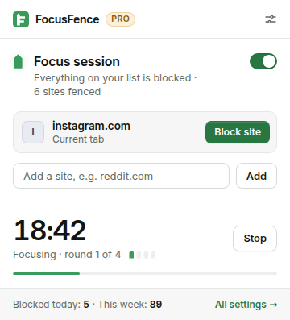
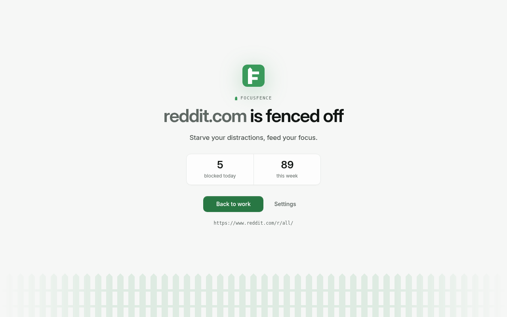
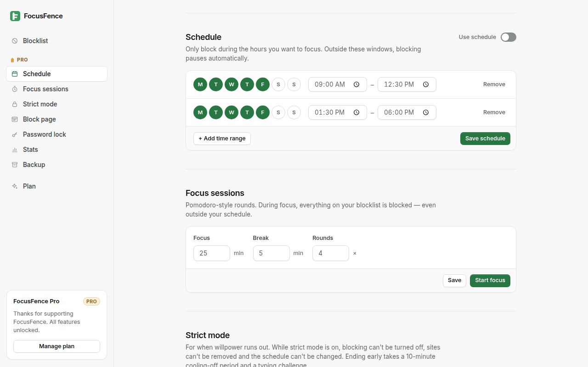
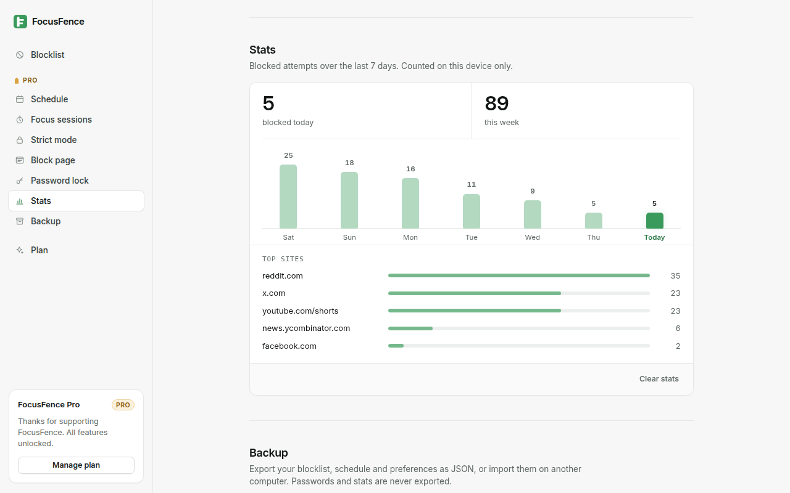

Website blocker for Chrome
Fence off the endless feeds.
FocusFence blocks the sites that steal your attention, in one click. Block all of Reddit, or only YouTube Shorts. Set focus hours. When willpower runs out, turn on strict mode.
Free forever for unlimited sites · No account · No tracking


Everything you need to stay focused. Nothing you don't.
Block a site in one click
Open the popup and press Block site. Blocking reddit.com also blocks old.reddit.com, m.reddit.com and every other subdomain.
Block only the bad part PRO
Block youtube.com/shorts and keep the rest of YouTube for tutorials and talks. Clicking into Shorts from inside YouTube is caught too. Keyword rules block any URL that contains a word.
Schedules PRO
Block only during work hours, on the days you choose. Overnight ranges work too, e.g. 22:00–06:00 for better sleep.
Pomodoro focus sessions PRO
Timed focus rounds and breaks. Everything on your list is blocked while you focus. The countdown sits on the toolbar icon.
Strict mode PRO
While strict mode is on, blocking can't be switched off and sites can't be removed. Ending it early takes a 10-minute cooling-off period and a typing challenge.
Stats, password lock & more PRO
See blocked attempts per site and per day. Lock settings with a password, write your own block-page message, export and import your setup.


Your data stays on your device
Your blocklist, settings and stats live in Chrome's local storage. No account, no analytics, no ads.
FocusFence doesn't read your pages
Blocking runs in Chrome's built-in rule engine (declarativeNetRequest). FocusFence never sees the content of the pages you visit.
Minimal permissions
FocusFence asks for site access one site at a time, only for sites you block. If you say no, the site is still blocked.
Simple pricing
Free
- Unlimited blocked sites
- Subdomains included
- One-click block from the popup
- On/off switch
- Calm block page
Pro monthly
- Everything in Free
- Schedules
- Path & keyword blocking
- Pomodoro focus sessions
- Strict mode
- Password lock, stats, custom message, backup
Pro yearly Save 44%
- Everything in Pro monthly
- 12 months for less than the price of 7
Payments are processed by ExtensionPay (Stripe). Prices in US dollars; in the eurozone, €2.99/month or €19.99/year.
Questions
Can I block YouTube Shorts but still use YouTube?
Yes, with Pro. Add youtube.com/shorts as a path rule. youtube.com, videos and search keep working. Shorts links and in-app navigation to Shorts are blocked.
Does blocking reddit.com also block old.reddit.com?
Yes. A domain rule covers every subdomain, in Free and Pro.
Why does Chrome ask for permission when I add a site?
Chrome only lets an extension redirect to its own block page on sites it has access to. FocusFence asks for that one site only. If you decline, the site is still blocked, but you'll see Chrome's error page instead of the FocusFence block page.
Can strict mode be bypassed?
Honest answer: Chrome always lets you disable or remove an extension, and FocusFence can't block the extensions page. A timed strict session pauses while FocusFence is off, so its time can't run out in the background. Incognito windows are only covered if you allow FocusFence in Incognito, and FocusFence warns you when it isn't. Other browsers and devices aren't covered.
What data do you collect?
None. See the privacy policy. The only network traffic is ExtensionPay checking your license, and only after you choose to upgrade.
Is FocusFence open source?
Yes, under the GNU AGPL v3. Read the code.